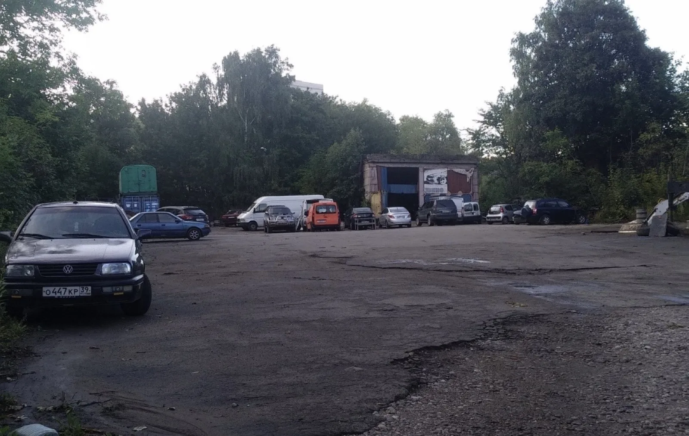
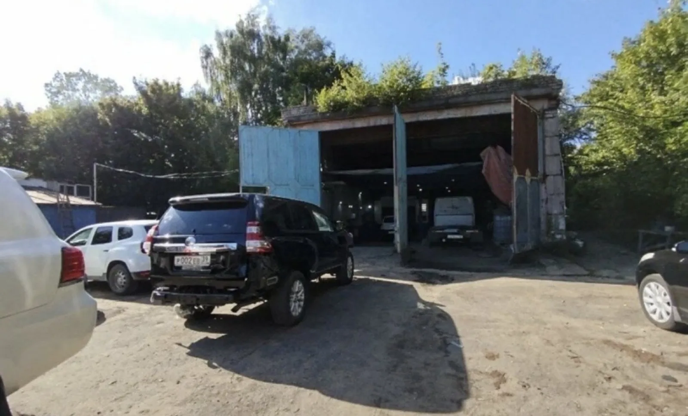
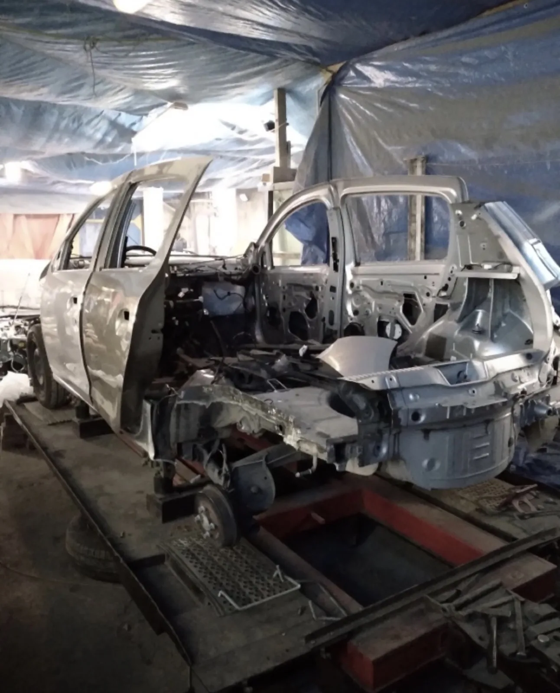

О цехе
Кузовной центр, где берутся за сложное и отвечают за результат. Работаем в Калининграде, на Ялтинской 26а/2.

Кузовной цех полного цикла
Балтавтопрокат — это команда, которая занимается кузовом всерьёз. Здесь и рихтуют, и варят, и красят, и защищают от коррозии — без передачи машины «на сторону». Всё под одной крышей и под личным контролем мастера.
Мы не гонимся за потоком. Нам важнее, чтобы после ремонта не было видно ремонта: ровная геометрия, честные зазоры, аккуратные переходы краски и защищённое днище. Именно за это к нам возвращаются и советуют знакомым.

Артемий — руками и головой
Каждый проект ведёт мастер лично — от дефектовки до выдачи. Вы всегда знаете, что происходит с вашей машиной и почему.
- Честная дефектовка. Показываем повреждения и объясняем объём работ.
- Без навязывания. Делаем то, что нужно, а не то, что дороже.
- На связи. Фото-отчёт по этапам прямо в WhatsApp.
На чём стоим
Честность
Оценка по факту, а не «на глаз». Не берёмся за то, что не сможем сделать хорошо.
Оборудование
Стапель, покрасочная зона, подъёмник и инструмент для серьёзного кузовного ремонта.
Материалы
Профессиональные краски и антикор-составы. Не экономим на том, от чего зависит результат.
Сроки
Называем реальные сроки и держим их. Если что-то меняется — предупреждаем заранее.
Отношение
Относимся к чужой машине как к своей. Аккуратно, внимательно, по-человечески.
Результат
Главная оценка нашей работы — когда после ремонта не видно, что был ремонт.
Приезжайте или пишите
Покажем цех, обсудим вашу задачу и честно скажем, что и как будем делать.